Gen-AI with JAX for simulation data
May 07th, 10:00am–12:00pm Pacific Time
Abstract: Most machine learning courses focus on standard workflows – such as image classification – where many pre-trained community models are readily available (e.g., via Hugging Face). In this course, we take a different approach by building a model for a custom scientific task: predicting the solution of a partial differential equation (PDE) from a given initial condition. The goal is to train a neural network that acts as a fast surrogate for traditional numerical solvers.
Using JAX, Flax, and Optax, we will train a surrogate model on 2D simulation data that we generate ourselves. Along the way, we will develop a complete machine learning pipeline from scratch: generating synthetic training data via simulations, selecting the right model architecture, training the model on an HPC cluster, making sure it runs efficiently on cluster’s GPUs, and evaluating the quality of the surrogate solutions.
We will explore three increasingly challenging types of initial conditions: a single Gaussian peak placed randomly within the domain, multiple random Gaussian peaks, and a combination of Gaussian peaks with 1D linear Gaussian features.
This course builds on our earlier JAX course, but no prior experience is required, as we will start from the basics.
Disclaimer
I am not an AI/ML specialist, but with a background in numerical methods and fluid dynamics, I am interested in building a surrogate model that can generate solutions after being trained on a set of PDE simulations. Most ML courses I’ve come across focus either on theory or on very different applications, such as image classification, so I decided to build a workflow around this specific use case. I hope that demonstrating how to train a neural network on simulation data will be useful to others.
Since I am relatively new to working directly with ML frameworks, I would really value your feedback. I also want the course to be transparent about the process, showing not only what works, but also what doesn’t when tackling this kind of problem.
Going forward, we plan to offer a series of hands-on courses covering different types of ML problems, all focused on developing models from scratch.
Installation
If running on your own computer, you will need a GPU for training. For inference, a CPU is sufficient. In either case, you would install the following libraries:
uv venv ~/env-jax --python 3.12 # create a new virtual environment
source ~/env-jax/bin/activate
uv pip install jax flax pillow matplotlib
...
deactivateHere is the installation on a production cluster (e.g. Fir):
module load python/3.12.4
python -m venv ~/env-jax
source ~/env-jax/bin/activate
python -m pip install --upgrade --no-index pip
python -m pip install --no-index jax flax pillow matplotlib
python -m pip install --no-index jax[cuda] # installs jax-cuda12-pjrt, jax-cuda12-plugin
# avail_wheels --name "*pytorch*" --all_versions # check out the available packages
# python -m pip install --no-index gpytorch==1.13 # if needed, install a specific version
...
deactivateToday we’ll be using our training cluster where we have already installed everything into a dedicated virtual Python environment. To load it:
source /project/def-sponsor00/shared/fixModules.sh
source /project/def-sponsor00/shared/env-jax/bin/activateWhen training on our small cluster, for some bigger models we’ll have to reduce the batch size by 2X (batchSize=4) to fit them into the 2g.10gb’s memory.
Now, we’ll log in to the training cluster with your username and password.
Numerical problem
The goal of this 2-hour ML course is to train a generative AI model on an ensemble of solutions from a 2D advection solver, and then use the model to predict solutions based on initial conditions.
Consider the following acoustic wave equation with \(c=1\) (speed of sound), written as a system separately for velocity and pressure:
\[ \begin{cases} \partial\vec{v}/\partial t = -\nabla p\\\ \partial p/\partial t = -\nabla\cdot\vec{v} \end{cases} \]
Writing a full 3D solver is straightforward, but to reduce the model training time, we will implement it in 2D. Here is a multi-threaded implementation of this solver in Chapel acoustic2D.chpl:
use Image, Math, IO, sciplot, Time;
use Random;
config const n = 500, nt = 250, nout = 250; // resolution, max time steps, plotting frequency
const a = 0.1; // 0.1 - thick front, no post-wave oscillations; 0.5 - narrow front, large oscillations
config const animation = true;
config const model = 8, nruns = 1;
var h = 1.0 / (n-1), coef = -(a/h)**2;
var colour: [1..n, 1..n] 3*int;
var cmap = readColourmap('viridis.csv'); // cmap.domain is {1..256, 1..3}
const mesh = {1..n, 1..n};
const largerMesh = {0..n+1, 0..n+1};
var Vx, Vy, P, tmp: [largerMesh] real;
var watch: stopwatch;
watch.start();
for run in 1..nruns {
P = 0;
Vx = 0;
Vy = 0;
select model {
when 8 do {
// 1-5 randomly placed points
var rint = new randomStream(int);
var np = rint.next(min=1, max=5); // default max=5
var rreal = new randomStream(real);
var sources: [1..np] (real, real);
for i in 1..np do
sources[i] = (0.2 + 0.6*rreal.next(), 0.2 + 0.6*rreal.next());
for (i,j) in mesh {
P[i,j] = 0;
for src in sources do
P[i,j] += exp(coef*( ((i-1)*h-src[0])**2 + ((j-1)*h-src[1])**2 ));
}
}
when 9 do {
// two randomly placed points with a line between them
var rreal = new randomStream(real);
var points = [(0.2+0.6*rreal.next(), 0.2+0.6*rreal.next()),
(0.2+0.6*rreal.next(), 0.2+0.6*rreal.next())];
var ax = points[1][0] - points[0][0], ay = points[1][1] - points[0][1];
for (i,j) in mesh {
var wx = (i-1)*h - points[0][0], wy = (j-1)*h - points[0][1];
var alength = sqrt(ax*ax + ay*ay), wlength = sqrt(wx*wx + wy*wy);
var distanceFromTheLine = abs(ax*wy - ay*wx) / alength;
var dimensionlessCoordinateAlongTheLine = (ax*wx + ay*wy) / (alength*alength);
if dimensionlessCoordinateAlongTheLine > 1 then
P[i,j] = exp(coef*(((i-1)*h-points[1][0])**2+((j-1)*h-points[1][1])**2));
else if dimensionlessCoordinateAlongTheLine < 0 then
P[i,j] = exp(coef*(((i-1)*h-points[0][0])**2+((j-1)*h-points[0][1])**2));
else
P[i,j] = exp(coef*distanceFromTheLine**2);
}
}
}
if animation then plotPressure(0,run);
var dt = h / 1.6;
for step in 1..nt {
periodic(P);
periodic(Vx);
periodic(Vy);
forall (i,j) in mesh {
Vx[i,j] -= dt * (P[i,j]-P[i-1,j]) / h;
Vy[i,j] -= dt * (P[i,j]-P[i,j-1]) / h;
}
forall (i,j) in mesh do
P[i,j] -= dt * (Vx[i+1,j] - Vx[i,j] + Vy[i,j+1] - Vy[i,j]) / h;
if step%nout == 0 && animation then plotPressure(step/nout,run);
}
}
watch.stop();
writeln('Simulation took ', watch.elapsed(), ' seconds');
proc periodic(A) {
A[0,1..n] = A[n,1..n]; A[n+1,1..n] = A[1,1..n];
A[1..n,0] = A[1..n,n]; A[1..n,n+1] = A[1..n,1];
}
proc fourDigits(n: int) {
var digits: string;
if n >= 1000 then digits = n:string;
else if n >= 100 then digits = "0"+n:string;
else if n >= 10 then digits = "00"+n:string;
else digits = "000"+n:string;
return digits;
}
proc plotPressure(step,run) {
// var output: [largerMesh] real;
var output = P;
for (i,j) in output.domain {
if output[i,j] < 0.0 then output[i,j] = 0.0;
//if output[i,j] > 0.10 then output[i,j] = 1.0;
}
var smin = min reduce(output);
var smax = max reduce(output);
writeln(smin, " ", smax);
for i in 1..n {
for j in 1..n {
var idx = ((output[j,n-i+1]-smin)/(smax-smin)*255):int + 1; //scale to 1..256
colour[i,j] = ((cmap[idx,1]*255):int, (cmap[idx,2]*255):int, (cmap[idx,3]*255):int);
}
}
var pixels = colorToPixel(colour); // array of pixels
var filename = "frame" + model:string + fourDigits(run) + fourDigits(step)+".png";
writeln("writing ", filename);
writeImage(filename, imageType.png, pixels);
}You will also need sciplot.chpl (below) that reads a colour map from a CSV file:
use IO;
use List;
proc readColourmap(filename: string) {
var reader = open(filename, ioMode.r).reader();
var line: string;
if (!reader.readLine(line)) then // skip the header
halt("ERROR: file appears to be empty");
var dataRows : list(string); // a list of lines from the file
while (reader.readLine(line)) do // read all lines into the list
dataRows.pushBack(line);
var cmap: [1..dataRows.size, 1..3] real;
for (i, row) in zip(1..dataRows.size, dataRows) {
var c1 = row.find(','):int; // position of the 1st comma in the line
var c2 = row.rfind(','):int; // position of the 2nd comma in the line
cmap[i,1] = row[0..c1-1]:real;
cmap[i,2] = row[c1+1..c2-1]:real;
cmap[i,3] = row[c2+1..]:real;
}
reader.close();
return cmap;
}To compile and run it:
source /project/def-sponsor00/shared/fixModules.sh
module load chapel-multicore/2.4.0
chpl --fast acoustic2D.chpl
wget https://raw.githubusercontent.com/razoumov/simdata/refs/heads/main/viridis.csv
srun --time=0:10:0 --mem-per-cpu=3600 ./acoustic2D --nt=5000For a single point source:
For two point sources:
Some representative solutions
Here are several example solutions (models 1-7; omitted from the code for brevity). We begin with solutions for point sources at a fixed time, with initial conditions shown on the left and the corresponding solutions on the right:
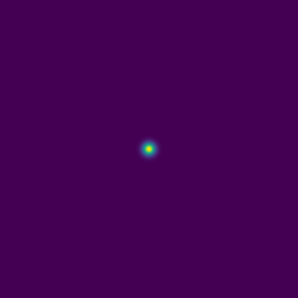
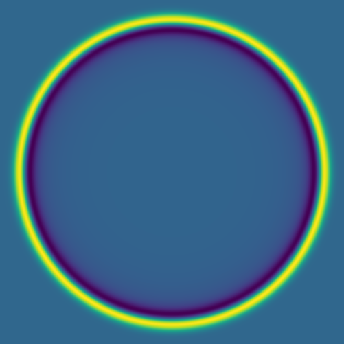
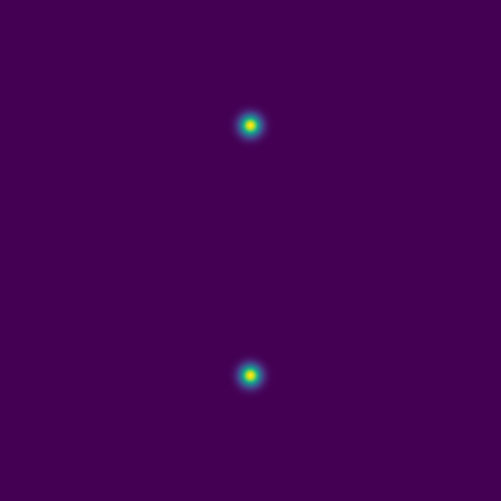
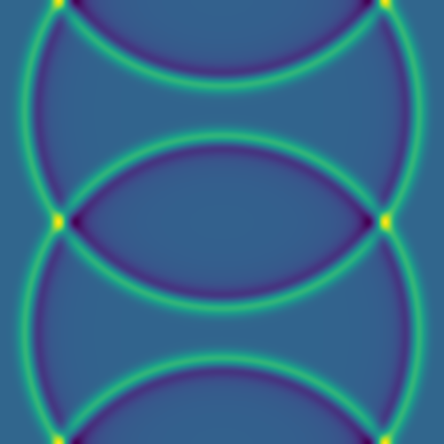
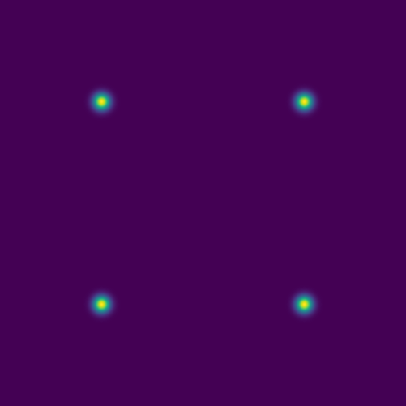
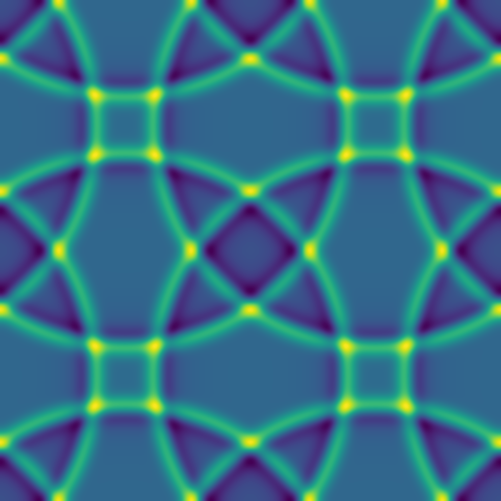
Since advection proceeds in the direction of the pressure gradient, a 1D initial pulse produces a flat 1D wave moving horizontally:
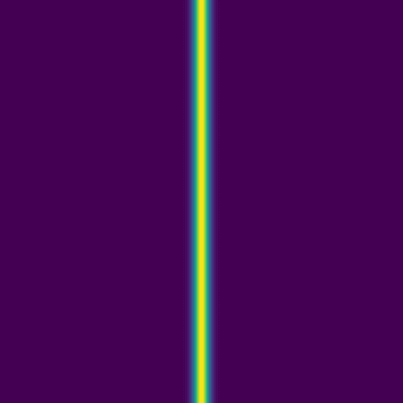
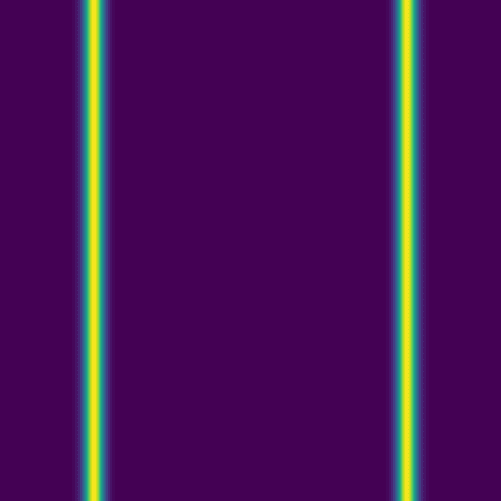
Here we combine 0D (point-source) and 1D (line) features:
The plan is to feed hundreds/thousands of these pairs of images – the initial conditions and the solution at the same fixed time – to a deep neural network, to train it to produce a surrogate solution from an arbitrary initial condition.
On the instructor’s laptop, demo a \(4001^2\) solution clip with 10_000 time steps:
open $(fd large.mkv ~/training)
Levels of difficulty
We will build our neural networks in order of increasing solution complexity:
1\(^\text{st}\) level: single point source placed randomly into the 2D domain,
2\(^\text{nd}\) level: 1-5 randomly placed point sources, and
3\(^\text{rd}\) level: 1-5 point sources or a single linear source, all randomly placed.
Training and testing data
Quick reminder to set our environment with:
source /project/def-sponsor00/shared/fixModules.sh
source /project/def-sponsor00/shared/env-jax/bin/activate
module load chapel-multicore/2.4.0Models 8–9 are production models we’ll use to generate synthetic data for training a generative AI model. To run, for example, model 8 once and save every frame for movie creation, use the following commands:
chpl --fast acoustic2D.chpl
srun --time=0:10:0 --mem-per-cpu=3600 ./acoustic2D --model=8 --nout=1to produce 251 frames that can be merged into a movie.
We will start with model 8 with a single source:
mkdir -p data/{training,testing}
>>> in acoustic2D.chpl, set the maximum number of sources: max=1
chpl --fast acoustic2D.chpl
srun --time=0:10:0 --mem-per-cpu=3600 ./acoustic2D --model=8 --nruns=500 # two files per run
# srun --time=0:10:0 --mem-per-cpu=3600 ./acoustic2D --model=9 --nruns=500 # two files per run
mv frame8????000{0,1}.png data/trainingEach line will run 500 models, with two frames (output images) per model.
We also need several test images:
srun --time=0:1:0 --mem-per-cpu=3600 ./acoustic2D --model=8 --nt=0 --nruns=5 # just the initial conditions
mv frame8000{1..5}0000.png data/testingFor all the images, our naming scheme is:
frame800010079.png file name includes the following pieces:
- 8 is the model number
- 0001 is the run number
- 0079 is the frame number for this run
In production runs, you will see only files *0000.png (initial conditions) and *0001.png (simulation result).
Neural net types
A zeroth-order approximation for our task would be a standard dense (fully connected) network that maps an input image to its corresponding solution image through several hidden layers. However, this architecture tends to perform poorly for this type of problem.
An improvement is to use a convolutional neural network (CNN). In this approach, convolutional filters are applied to local patches of pixels, with the results feeding into neurons in the next layer. Each neuron therefore receives input from a small region of the previous layer, which reduces the number of parameters compared to a fully connected network and enables the model to recognize features even when they are spatially shifted in the input (translation invariance). By stacking layers with different filters, the network can learn increasingly complex features.
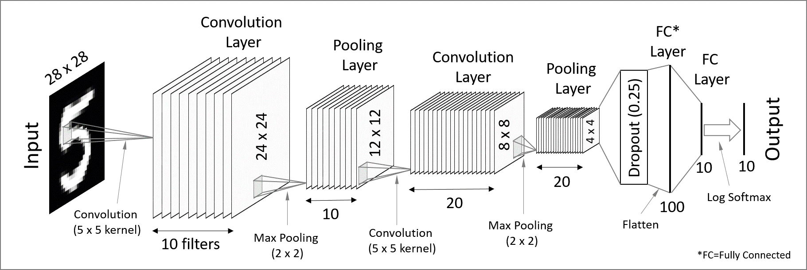
CNNs are great for processing images (these contain a lot of redundant spatial information!) and detecting patterns, and they work ideally for classification tasks. In short, convolutional layers extract high-level features (detecting patterns and objects) while reducing the spatial resolution – we would call this an encoder network.
To make convolutional layers work for an image-to-image generative neural network, you have to add a decoder part where you reconstruct the spatial information (where these objects are), forming what is formally called a Convolutional Autoencoder (CAE) network. As we will see further with a code, a CAE works very slowly to generate a PDE solution, as spatial information gets almost lost in the convolutional layers and, as a result, propagates very slowly into the output layer (reconstructed solution).
To speed up convergence, a U-Net introduces skip connections that pass low-level pixel data from the input image (or encoder) to the decoder. For example, you can convolve one of the encoder layers with one of the decoder layers.
A further improvement would be a generative adversarial network (GAN), where two neural networks – a CNN-based generator and a CNN-based discriminator – compete against each other to create realistic data that mimic the training set.
Let’s play with some of these networks.
JAX components
JAX is a Python package from Google for accelerator-oriented array computation that provides a base for various ML libraries. We teach Deep learning with JAX in a separate course.
In today’s workshop we’ll be using the new Flax NNX API for defining neural networks in JAX:
- mutable, object-oriented approach that will feel familiar to PyTorch users
- replaces older Flax Linen API
- you define a model as a Python class that inherits from
flax.nnx.Module - models are regular Python objects holding their own state
Optax is the de facto gradient processing and optimization library for JAX:
flax.nnx.Optimizer()lets Flax NNX models to seamlessly use Optax optimizers- built around smaller blocks for gradient transformations that you chain together with
optax.chainto create complex gradient processing pipelines - the optimizer is separate from the model
The loss function in JAX workflows is implemented as a Python function that takes the model instance, input data, and targets, and returns a scalar loss value. You call this function via nnx.value_and_grad(loss_fn)(model) that computes both the loss and the new gradients w.r.t. the model parameters.
- JAX documentation https://jaxstack.ai and https://jax.dev
- Flax documentation https://flax.readthedocs.io
- High-level videos for learning JAX https://goo.gle/learn-jax-videos
Convolution kernels
When you apply a convolutional kernel with nnx.Conv(), the model doesn’t know what it’s supposed to “see” yet. To start the learning process, JAX/Flax fills the kernel with small random numbers and in such a way that the weights are varied enough that the neurons don’t all learn the same thing, and also small enough that the math doesn’t “explode” during the first pass.
For a 3x3 convolution, the kernel is a 4D array. If in_features=1 and out_features=64, the kernel shape is (3, 3, in_features, out_features). If in_features=1 and out_features=64, there are effectively 64 different 3x3 filters, each looking for a different pattern like an edge, a curve, or a dot.
While initially the kernel is random, an optimizer slightly tweaks those numbers. After training, those values are no longer random: they might represent specific visual features.
Optimizers
In Optax, optimizers are essentially aliases for pre-packaged chains of gradient transformations. Optax provides a broad range of these, from standard deep learning workhorses to specialized scientific and memory-efficient algorithms.
optax.adamis the industry standard, combines momentum and adaptive scalingoptax.adamwis the Adam optimizer with weight decay decoupled from the learning rate; weight decay is a regularization technique that penalizes large weights, encouraging the model to keep parameters small and thus producing smoother solutions while reducing overfittingoptax.rmspropis popular for Recurrent Neural Networks (RNNs) and Reinforcement Learningoptax.adagradis good for sparse data; it scales the learning rate based on how frequently a parameter is updatedoptax.sgdis the Canonical Stochastic Gradient Descent; good for ResNets and computer vision tasksoptax.fromageis a “Frobenius Matched Gradient Descent” that helps keep weight norms stable during trainingoptax.contrib.prodigyis a “learning rate-free” version of AdamW that tries to estimate the optimal step size automaticallyoptax.contrib.sophiais a second-order optimizer that uses a diagonal Hessian estimate, designed to be faster than Adam for LLMsoptax.contrib.muonis a momentum-based optimizer that uses Newton-Schulz iteration to orthogonalize updates
Running training
On my laptop with 16GB and without an NVIDIA GPU, one of the models below runs on the CPU but very slowly, taking ~2h per epoch. The same model takes few seconds per epoch on Fir’s full H100 GPU. On Fir, my minimum ask was --cpus-per-task=8 --mem-per-cpu=7200 --gpus-per-node=h100:1, otherwise the models run out of memory.
On the training cluster we can reduce the batch size by 2X and the fit the model on a GPU slice with the SLURM flags --time=1:0:0 --mem=3600 --gpus-per-node=2g.10gb:1.
First network architecture: convolutional autoencoder
A convolutional network was my first choice as they are highly effective for image-to-image translation tasks. It is a type of convolutional encoder-decoder that theoretically can capture both global and local features, which is crucial for handling the spatial dependencies in a PDE solution. There are two parts:
- the encoder to reduce the image size while increasing the depth; essentially summarizes the image into high-level features, and
- the decoder to enable precise localization; uses “up-convolutions” (transpose convolutions) to restore the image to its original size.
Here we implement a simple convolutional autoencoder network. Let’s define this model in a file cae.py:
import jax
import jax.numpy as jnp
from flax import nnx
class CAE(nnx.Module):
def __init__(self, rngs: nnx.Rngs): # define the model layers
self.c1 = nnx.Conv(1, 32, kernel_size=(3, 3), rngs=rngs)
# convolution layer applying a sliding kernel over input data
# arguments: number of input channels (1)
# number of output channels/filters (32),
# convolution window kernel size (3x3),
# dictionary of random seeds
self.c2 = nnx.Conv(32, 64, kernel_size=(3, 3), strides=2, rngs=rngs)
# downsampling layer to reduce the width/height by 2X;
# number of channels goes from 32 to 64
self.bottleneck = nnx.Conv(64, 64, kernel_size=(3, 3), rngs=rngs)
# bottleneck processing the most compressed data representation
self.up = nnx.ConvTranspose(64, 32, kernel_size=(3, 3), strides=2, rngs=rngs)
# upsampling layer to double the width/height by 2X;
# number of channels goes from 64 to 32
self.out = nnx.Conv(32, 1, kernel_size=(3, 3), rngs=rngs)
# final layer to map the features back to a single channel
def __call__(self, x): # define the forward pass
x1 = nnx.relu(self.c1(x)) # the encoder
x2 = nnx.relu(self.c2(x1)) # spatial downsampling
x3 = nnx.relu(self.bottleneck(x2)) # the bottleneck
x4 = nnx.relu(self.up(x3)) # the decoder with spatial upsampling
return jax.nn.sigmoid(self.out(x4)) # back to 1 channel;
# sigmoid ensures values ∈ [0,1]and then import this model from train.py:
import jax
import jax.numpy as jnp
from flax import nnx
import optax
import glob
import numpy as np
from PIL import Image
import orbax.checkpoint as ocp
from cae import CAE
rngs = nnx.Rngs(0) # to provide random keys to initialize the parameters
model = CAE(rngs=rngs)
optimizer = nnx.Optimizer(model, optax.adam(1e-3), wrt=nnx.Param)The last argument wrt=nnx.Param tells NNX to apply gradients only to objects marked as parameters, like weights and biases.
We need to load the image pairs for training:
dir = "/home/instructor2/jax/"
# find all initial condition files matching frame8****0000.png
inputFiles = sorted(glob.glob(dir+"data/training/frame8*0000.png"))
print(f"Found {len(inputFiles)} initial conditions to process.")
# create two lists: initial conditions and solutions
X_list, Y_list = [], []
for i, initial in enumerate(inputFiles):
runNumber = initial[-12:-8]
if (i+1)%100 == 0:
print(f"Reading run {runNumber}")
solution = dir + "data/training/" + f"frame8{runNumber}0001.png"
img_x = Image.open(initial).convert('L') # open image in grayscale (L) mode
x_array = np.asarray(img_x, dtype=np.float32) / 255.0 # convert to NumPy array and normalize assuming 8-bit images
img_y = Image.open(solution).convert('L')
y_array = np.asarray(img_y, dtype=np.float32) / 255.0
X_list.append(x_array)
Y_list.append(y_array)
# convert these lists to JAX arrays and add the channel dimension (C=1 for grayscale)
X = jnp.array(X_list)[..., jnp.newaxis]
Y = jnp.array(Y_list)[..., jnp.newaxis]
print(f"Data shapes: X={X.shape}, Y={Y.shape}")We define the training function:
@nnx.jit
def train_step(model, optimizer, batch_x, batch_y):
# wrap the loss, gradient calculation and update into a single training step function
def loss_fn(model):
y_pred = model(batch_x) # forward pass
return jnp.mean((y_pred - batch_y)**2) # mean squared error for residuals
loss, grads = nnx.value_and_grad(loss_fn)(model)
optimizer.update(model, grads)
return lossFinally, we define the training loop:
- to keep it GPU-efficient, we slice our JAX arrays into mini-batches
- we add check-pointing, writing our weights and biases every 10 epochs – these can be used both to restart iterations from a mid-point and for inference
numEpochs = 500 # 500 default for a less noisy solution
batchSize = 8 # default 8
numSamples = X.shape[0]
for epoch in range(numEpochs):
perms = jax.random.permutation(jax.random.PRNGKey(epoch), numSamples)
X_shuffled, Y_shuffled = X[perms], Y[perms]
epoch_loss = []
for i in range(0, numSamples, batchSize): # default 63 loops
bx = X_shuffled[i : i + batchSize]
by = Y_shuffled[i : i + batchSize]
loss = train_step(model, optimizer, bx, by)
epoch_loss.append(loss)
print(f"Epoch {epoch}, loss: {np.mean(epoch_loss):.6f}")
graph, state = nnx.split(model) # extract the state from NNX;
# graph = static model skeleton (layer connections)
# state = evolving weights and parameters
checkpointer = ocp.StandardCheckpointer()
if (epoch+1)%10 == 0:
print(dir+'weights%03d'%(epoch))
checkpointer.save(dir+'weights%03d'%(epoch), state)
checkpointer.wait_until_finished() # wait for the save thread to finish writing to diskNow we are ready to train the model:
>>> in train.py: set dir = "/home/instructor2/tmp/", batchSize=8
source /project/def-sponsor00/shared/env-jax/bin/activate
srun --time=0:30:0 --mem-per-cpu=3600 --gpus-per-node=2g.10gb:1 python -u train.pyLet it run for a few outputs, so that you see weights009, weights019, … saved. How is your training loss?
We’ll be running inference from a separate file infer.py that takes both the latest weights and an initial condition as a PNG file:
import jax
import numpy as np
from flax import nnx
import orbax.checkpoint as ocp
from PIL import Image
import jax.numpy as jnp
import matplotlib.pyplot as plt
import sys
from pathlib import Path
from cae import CAE
rngs = nnx.Rngs(0) # to provide random keys to initialize the parameters
model = CAE(rngs=rngs)
if len(sys.argv) < 3:
print("Usage: python script.py weightsDir initialImage.png")
sys.exit(1)
dirname = sys.argv[1]
currentPath = str(Path('.').resolve()) + '/'
checkpointer = ocp.StandardCheckpointer()
graph, state = nnx.split(model)
restored_state = checkpointer.restore(currentPath+dirname, target=state) # restore the state
nnx.update(model, restored_state) # load back into the model
@nnx.jit
def predict(model, x):
return model(x)
img_x = Image.open(sys.argv[2]).convert('L') # open image in grayscale (L) mode
x_array = np.asarray(img_x, dtype=np.float32) / 255.0 # convert to NumPy array and normalize assuming 8-bit images
initialState = jnp.array(x_array)[np.newaxis, ..., np.newaxis]
predictedSolution = predict(model, initialState).reshape(500, 500)
fig = plt.figure(figsize=(5, 5), dpi=100)
ax = fig.add_axes([0, 0, 1, 1])
ax.imshow(predictedSolution, interpolation='nearest', cmap='viridis')
ax.axis('off')
plt.savefig("prediction.png", pad_inches=0)
plt.close()srun --time=0:5:0 --mem-per-cpu=3600 --gpus-per-node=2g.10gb:1 python -u infer.py weights019 data/testing/frame800030000.png
open prediction.png data/testing/frame800030001.pnglaptop
cd ~/tmp
scp sfucompute:tmp/{prediction.png,data/testing/frame800030000.png} .
open frame800030000.png prediction.pngHere is our solution:
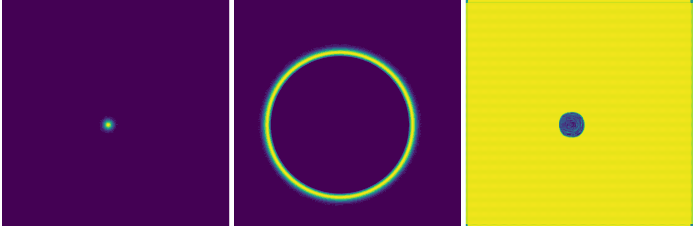
While this network can accurately position the circle around the initial dot (easy to verify with other initial conditions), it fails to reproduce the solution. You can also see this in the training loss evolution: it essentially plateaus at a high value.
I tested variants with different spatial downsampling, and even removing downsampling entirely, but that did not help.
Second network architecture: U-Net
To speed up convergence, a U-Net introduces skip connections that pass low-level pixel data from the input image (or encoder) to the decoder. For example, you can convolve one of the encoder layers with one of the decoder layers.
In other words, a traditional convolutional network compresses the image into a very small bottleneck to understand “what” is in the picture. However, this compression destroys spatial information. Skip connections take the high-resolution spatial information from the beginning and “paste” it back into one of the later layers.
Let’s copy cae.py into unet.py and make the following modifications:
- self.out = nnx.Conv(32, 1, kernel_size=(3, 3), rngs=rngs) # final layer to map the features back to a single channel
+ self.out = nnx.Conv(64, 1, kernel_size=(3, 3), rngs=rngs) # final layer to map the features back to a single channel
x3 = nnx.relu(self.bottleneck(x2)) # the bottleneck
x4 = nnx.relu(self.up(x3)) # the decoder (upsampling)
+ x4 = jnp.concatenate([x4, x1], axis=-1) # skip connection to the first layerIt performs almost the same as the convolutional autoencoder:
Adding more layers to our U-Net helps, for example adding the following:
- add ConvBlock to repeat the “Conv-BN-ReLU” pattern twice at every stage
- add
nnx.BatchNormto make sure that gradients do not vanish or explode - switch from strided convolutions to max_pool for downsampling, to reflect the classic U-Net
- use a 1x1 kernel for the final output to map the high-dimensional feature map down to a single variable
- filter symmetry 1 -> 64 -> 128 -> 256 -> 128 -> 64 -> 1 to reflect the classic U-Net
results in an equally poor solution:
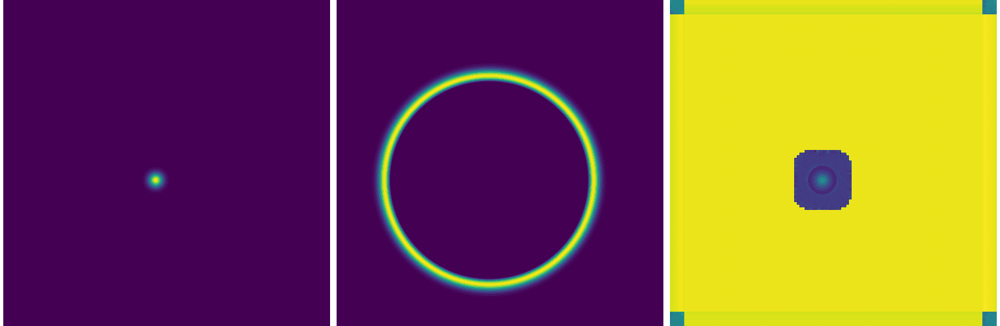
As it turns out, it is actually very common for standard U-Nets to struggle with PDEs. While U-Nets are great at identifying and locating patterns, and learning low-frequency shapes, they can’t quite capture high-frequency gradients in a PDE solution.
There are other things you could play with, e.g. try a smoother activation function, increase the depth of the network, play with individual layers, but so far I have not found a good solution for this problem with UNet-type networks.
Third network architecture: Fourier Neural Operator (FNO)
In our defence, from a temporal standpoint, we chose one of the most computationally demanding problems possible:
| This course | Mapping from | Mapping to | Difficulty | Comment |
|---|---|---|---|---|
| ✓ | initial conditions | solution at a fixed later time | very difficult: large gap between the initial conditions and the solution | |
| solution at one time step | solution at the next time step | easiest: small evolution | ||
| solution at all previous time steps | solution for all remaining time steps | ? | auto-regressive neural net: apply an FNO to the output of the previous FNO | |
| initial conditions | solution for all time steps | very difficult | auto-regressive neural net |
Fourier Neural Operator (FNOs) were pioneered by Li et al. in 2020 – see the diagram below copied from their original paper.
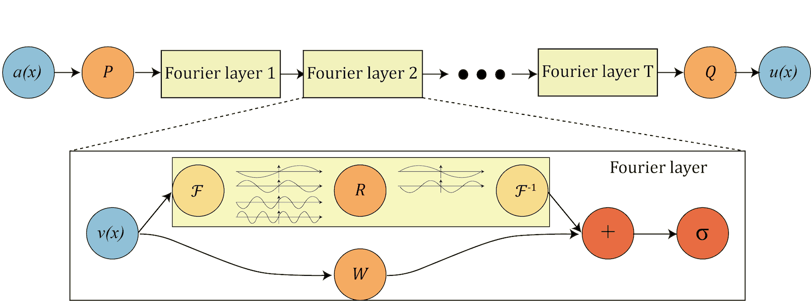
- P “lifts” the original initial condition to a higher dimension channel space
- Q projects back to the the target dimension
- multiple stacks of spectral convolution (Fourier layers)
- each Fourier layer:
- the Fourier transform \(\cal{F}\)
- a linear transform \(\cal{R}\) to keep just the lower Fourier modes, i.e. truncate higher-mode oscillations
- the inverse Fourier transform \(\cal{F}^{−1}\)
- a local linear transform \(\cal{W}\) for a local skip connection
In a nutshell, since we apply convolutions in the Fourier (spectral) space, we automatically get multiscale properties, i.e. the ability to reconstruct shapes of different sizes from the training set solutions. This is ideal for physics-informed ML and for solving PDEs.
Another appealing property of FNOs is their ability to generate solutions at higher spatial resolution than those used during training, effectively enabling super-resolution of numerical solutions.
In the file fourier.py, define a class SpectralConv2d for our basic spectral convolution layer:
- the matrix multiplication
jnp.einsum()insideSpectralConv2dperforms a frequency-domain linear transformation, which is the mathematical equivalent of a convolution in the spatial domain - we matrix-multiply the input frequencies and the learnable weights across the input (i) and output (o) channels
- since we perform a Fourier transform on real-valued data, the output in the frequency domain has some redundancies (symmetries) ⇨ we need to consider only two quadrants in the 2D frequency domain
- the notation “bixy,ioxy->boxy” describes mapping of input/output dimensions for the complex matrix multiplication at every frequency coordinate:
b= batch size,i= number of input channels,o= number of output channels,xandy= 2D frequency coordinates self.weights1andself.weights2are learnable weights for positive and negative frequencies in both spatial dimensions
import jax
import jax.numpy as jnp
from flax import nnx
class SpectralConv2d(nnx.Module):
def __init__(self, in_channels, out_channels, modes1, modes2, rngs: nnx.Rngs):
self.in_channels = in_channels
self.out_channels = out_channels
self.modes1 = modes1 # number of lowest vertical frequencies to keep
self.modes2 = modes2 # number of lowest horizontal frequencies to keep;
# higher frequencies are discarded
# learnable weights are complex-valued in the Fourier domain
scale = 1 / (in_channels * out_channels) # normalization
self.weights1 = nnx.Param(scale * jax.random.normal(rngs.params(),
(in_channels, out_channels, modes1, modes2), dtype=jnp.complex64))
self.weights2 = nnx.Param(scale * jax.random.normal(rngs.params(),
(in_channels, out_channels, modes1, modes2), dtype=jnp.complex64))
def __call__(self, x):
batch, h, w, c = x.shape # batch, height, width, channels
# transform to Fourier domain
x = jnp.transpose(x, (0, 3, 1, 2)) # reorder to (batch, channel, height, width) dimensions
# as jnp.fft.rfftn needs input in a certain layout
x_ft = jnp.fft.rfftn(x, axes=(-2, -1)) # real FFT: pixels -> frequency coeffs
# blank frequency domain canvas
out_ft = jnp.zeros((batch, self.out_channels, h, w // 2 + 1), dtype=jnp.complex64)
# frequency-domain linear transformation: top left corner
res1 = jnp.einsum("bixy,ioxy->boxy", x_ft[:, :, :self.modes1, :self.modes2], self.weights1)
out_ft = out_ft.at[:, :, :self.modes1, :self.modes2].set(res1)
# frequency-domain linear transformation: bottom left corner
res2 = jnp.einsum("bixy,ioxy->boxy", x_ft[:, :, -self.modes1:, :self.modes2], self.weights2)
out_ft = out_ft.at[:, :, -self.modes1:, :self.modes2].set(res2)
# as for the top/bottom right corners, they are redundant, so no need to store them
# return to physical space
x = jnp.fft.irfftn(out_ft, s=(h, w), axes=(-2, -1)) # inverse FFT: filtered coeffs -> 2D image
return jnp.transpose(x, (0, 2, 3, 1)) # reorder to (batch, height, width, channel) dimensionsWe stack four of these spectral convolution layers in our network, each with a parallel skip connection:
class FNO2d(nnx.Module): # high-level network architecture
def __init__(self, modes, width, rngs: nnx.Rngs):
# lift the input data into a higher-dim space (width) so the model
# has more room to learn complex features
self.fc0 = nnx.Linear(1, width, rngs=rngs) # first, fully connected layer
# four spectral convolution layers
self.conv0 = SpectralConv2d(width, width, modes, modes, rngs=rngs)
self.conv1 = SpectralConv2d(width, width, modes, modes, rngs=rngs)
self.conv2 = SpectralConv2d(width, width, modes, modes, rngs=rngs)
self.conv3 = SpectralConv2d(width, width, modes, modes, rngs=rngs)
# skip connections: standard linear (fully connected) layers
self.w0 = nnx.Linear(width, width, rngs=rngs)
self.w1 = nnx.Linear(width, width, rngs=rngs)
self.w2 = nnx.Linear(width, width, rngs=rngs)
self.w3 = nnx.Linear(width, width, rngs=rngs)
# projection layers: squeeze high-dim space back down to the output size
self.fc1 = nnx.Linear(width, 128, rngs=rngs)
self.fc2 = nnx.Linear(128, 1, rngs=rngs)
def __call__(self, x): # make FNO2d class a function
x = self.fc0(x)
x1 = self.conv0(x) + self.w0(x) # global (Fourier) + local (linear) patterns
x = jax.nn.gelu(x1) # non-linear activation function
x2 = self.conv1(x) + self.w1(x)
x = jax.nn.gelu(x2)
x3 = self.conv2(x) + self.w2(x)
x = jax.nn.gelu(x3)
x4 = self.conv3(x) + self.w3(x)
x = self.fc1(x4) # final projection, first layer
x = jax.nn.gelu(x)
x = self.fc2(x)
return xWe call this model from the main code train.py:
from fourier import SpectralConv2d, FNO2d
modes = 12 # default 12, number of Fourier components to keep; bigger => higher res and larger snapshots
width = 32 # default 32, number of features each spatial point has an effect on
learning_rate = 1e-3
rngs = nnx.Rngs(params=0)
model = FNO2d(modes, width, rngs=rngs)
gradientTransformation = optax.adam(learning_rate)
optimizer = nnx.Optimizer(model, gradientTransformation, wrt=nnx.Param)As the model is now larger, set batchSize = 4 in train.py to fit it into memory, then run training as usual:
rm weights???
srun --time=0:30:0 --mem-per-cpu=3600 --gpus-per-node=2g.10gb:1 python -u train.pySince FNOs operate in the frequency domain, the gradients for different modes can vary significantly in magnitude. Adaptive optimizers like Adam are particularly effective here because they normalize these gradients, ensuring that high-frequency and low-frequency modes are updated at a compatible scale.
Here is an example of a converged solution for a single source:
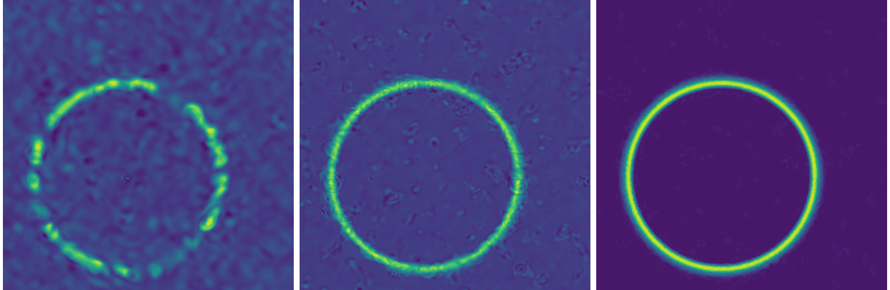
Convergence
Although FNOs can perform well, convergence is not guaranteed. In practice, achieving reliable convergence feels more like an art than a science. In many of my runs, training plateaus after 10-50 iterations, with the loss stabilizing in the range 0.003-0.005. Based on visual assessment, I consider the solution converged only when the loss drops below \(10^{-3}\).
There are techniques that can help improve the convergence rate, but there is no clear way to guarantee convergence. Here are a few things you could try:
- a smaller learning rate:
learning_rate = 5e-4
gradientTransformation = optax.adam(learning_rate)
optimizer = nnx.Optimizer(model, gradientTransformation, wrt=nnx.Param)or even an adaptive learning rate:
learningRateSchedule = optax.cosine_decay_schedule(init_value=1e-3, decay_steps=1000, alpha=0.1)
gradientTransformation = optax.adam(learning_rate)
optimizer = nnx.Optimizer(model, gradientTransformation, wrt=nnx.Param)- a different optimizer
- the default
optax.adamis already pretty good and is the industry standard optax.adamwis the Adam optimizer with weight decay decoupled from the learning rate
optax.adamw(learning_rate=learningRateSchedule, weight_decay=2e-4) # default decay 1e-4- add a loop where you propose a step and only accept it if the new loss is smaller;
optax.scale_by_backtracking_linesearchwraps your chosen optimizer to check if the loss decreases sufficiently; if not, it takes the step back and then shrinks the step size until a decrease is found
- the default
- clip gradients with
optax.clip_by_global_norm()to some max global norm
tx = optax.chain(optax.clip_by_global_norm(1.0), optax.adam(1e-3))
optimizer = nnx.Optimizer(model, tx, wrt=nnx.Param)You can combine this with an adaptive learning rate:
learningRateSchedule = optax.cosine_decay_schedule(init_value=1e-3, decay_steps=2000, alpha=0.01)
tx = optax.chain(
optax.clip_by_global_norm(1.0),
optax.adam(learningRateSchedule)
)
optimizer = nnx.Optimizer(model, tx, wrt=nnx.Param)Multi-point-source model
If we try to apply a single-source model to an initial condition with multiple sources (difficulty level 2), we get nonsense:
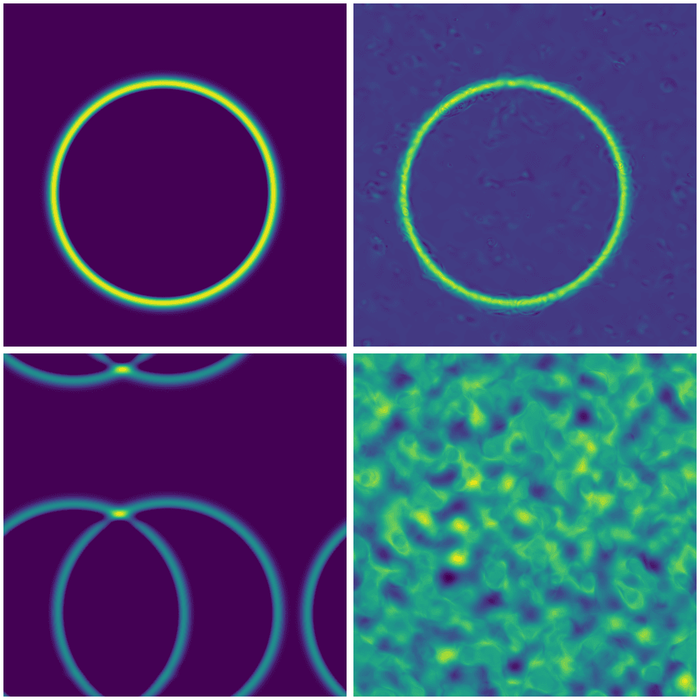
Top row: single source with exact (left) and FNO solution (right).
Bottom row: two sources with exact (left) and FNO solution (right).
For multiple point sources, we actually need to train a new model.
Multi-shape model
Train a new model for a combination of point and line sources (difficulty level 3). I will leave this as a take-home exercise.
GPU thread/memory utilization
For your past jobs on production clusters, we encourage you to use our Metrix portal which is currently available for Rorqual, Narval and Nibi. The support for Fir will hopefully come very soon.
However, you can also monitor running jobs in real time via command line. The two tools useful for this are NVIDIA’s nvidia-smi and nvtop, and you can use them from the login node via these handy shortcuts:
function job-nvidia-smi() {
srun --jobid=$(squeue -u $USER | awk 'NR==2 {print $1}') --pty watch -n 1 nvidia-smi # replace current output every 1s
}
function job-nvtop() {
srun --jobid=$(squeue -u $USER | awk 'NR==2 {print $1}') --pty nvtop # the first job from the list
}nvidia-smi and nvtop do not have access to real-time GPU utilization inside a MIG, although they show memory usage per slice. They show GPU utilization only if you schedule a full GPU.
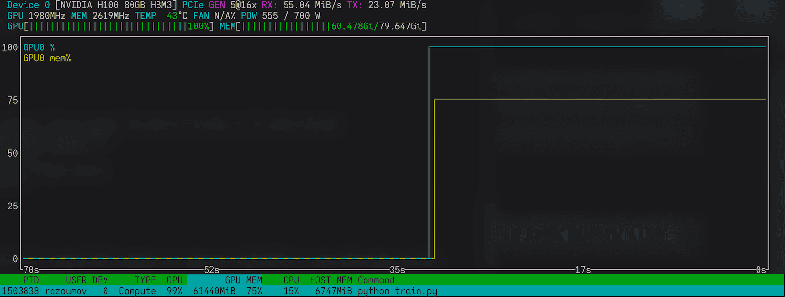
nvtop on a full GPULinks
- Marie’s Introduction to NN notes
- Neural Network basics from Programming Journeys by Rensu Theart
- Original Fourier Neural Operator paper by Li et al. (2020)
- Very good YouTube video intro Fourier Neural Operators (FNO) in JAX